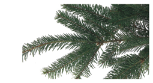
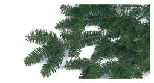
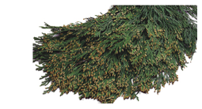
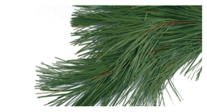
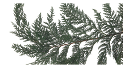
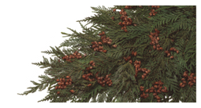

The term deciduous refers to the process in which a tree sheds what is 'no longer needed'. This includes leaves in the winter or petals after flowers have blossomed. Although this process is natural, there are shade-friendly trees out there who are not decidous in the fall.
Learn more about each type of non-deciduous tree below by clicking on the image of your desired tree. To view more trees for purchase, please visit our catalog!
Non-Deciduous Trees
|  |  |  |
Douglas Fir
|
Balsam Fir
|
Incense Cedar
|
|  |  |  |
Ponderosa Pine
|
Port Orford Cedar
|
Coned Cedar
|